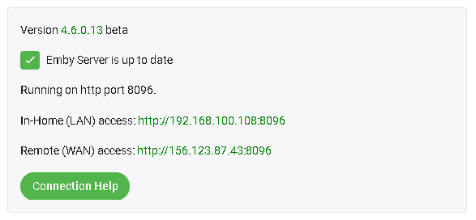

Remote-Einrichtung
Der Emby Server ermöglicht es Ihnen, optional eine Verbindung außerhalb Ihres Heimnetzwerks herzustellen. Bevor wir beginnen, stellen Sie sicher, dass Sie über Apps und Geräte in Ihrem lokalen Netzwerk ordnungsgemäß eine Verbindung zu Ihrem Emby Server herstellen können. Wenn Sie Probleme mit den Verbindungen in Ihrem Netzwerk haben, lesen Sie den Artikel zur lokalen Konnektivität.
Fernzugriff aktivieren
Der erste Schritt besteht darin, den Fernzugriff zu aktivieren. Sie tun dies im Netzwerk-Menü des Servers, indem Sie "Remote-Verbindungen zu diesem Emby Server zulassen" aktivieren. Beachten Sie, dass dies auch auf Benutzerebene aktiviert werden muss - siehe Absatz am Ende dieses Artikels.
Auf derselben Seite finden Sie weiter unten in diesem Abschnitt diese Optionen:

Wenn Sie einen Router haben, der UPnP unterstützt und dies aktiviert hat, können Sie die Funktion "Automatische Portzuordnung aktivieren" aktivieren. Sollte diese Option nicht sichtbar sein, installieren Sie bitte das Port Mapper Plugin aus dem Plugin-Katalog.
Note
Die meisten Router haben die UPnP-Option standardmäßig deaktiviert.
Wenn Sie die automatische Portzuordnung im Emby Server aktivieren (oben gezeigte Option) und UPnP auf Ihrem Router aktivieren, sind Sie wahrscheinlich fertig und Emby wird remote funktionieren!
Note
Wenn Sie UPnP gerade auf Ihrem Router aktiviert haben, starten Sie bitte den Emby Server neu.
Portweiterleitung einrichten
Wenn Sie nach dem Testen der obigen Einstellungen mit automatischer Portzuordnung nicht in der Lage sind, eine Verbindung herzustellen, müssen Sie möglicherweise die Portweiterleitung manuell mit Ihrem Router einrichten, um eine externe Verbindung zu Ihrem Emby Server zu ermöglichen.
Dazu deaktivieren Sie die gerade eingestellte Option "Automatische Portweiterleitung aktivieren" und öffnen die Web-Oberfläche Ihres Routers. Sie müssen den TCP-Port 8096 auf Ihrem Router an Port 8096 auf dem Emby Server-Rechner weiterleiten. Dasselbe gilt für Port 8920 (falls SSL verwendet wird). Es ist wichtig, dass sich die lokale IP-Adresse des Emby Server-Rechners nicht ändert. Verwenden Sie dazu die DHCP-Reservierungsfunktion Ihres Routers.
Wenn Sie andere öffentliche Portnummern verwenden möchten, siehe Netzwerk (Hosting) Einstellungen. Wenn Sie mehr als einen Emby Server in Ihrem lokalen Netzwerk haben und die manuelle Portweiterleitung erforderlich ist, dann ist es erforderlich, von den Standard-öffentlichen Portnummern abzuweichen, da jeder Server eine andere öffentliche Portnummer haben muss.
Wenn Sie mehr als einen Router haben, z.B. einen vom ISP bereitgestellten Router und auch Ihren eigenen Router, würde dies zu einer doppelten NAT führen, was dazu führen würde, dass der Server extern nicht erreicht werden kann. In solchen Fällen wird empfohlen, dass ein Router, z.B. der ISP-Router, im Modem-/Bridge-Modus konfiguriert wird. Wenn beide als Router betrieben werden müssen, wäre die Konfiguration komplexer und erfordert das Kaskadieren der Portweiterleitung vom ersten Router zum zweiten und die tatsächliche erforderliche Portweiterleitung auf dem zweiten Router. Auch der zweite Router müsste eine lokale IP-Adresse als DHCP-Reservierung auf dem ersten Router haben.
Der Vorgang einer Portweiterleitung wird für jedes Routermodell leicht unterschiedlich sein.
Hier sind gute Schritt-für-Schritt-Anleitungen, wie dies zu tun ist: https://portforward.com/dhcp-reservation/#how-to-make-a-dhcp-reservation-in-your-router http://www.wikihow.com/Set-Up-Port-Forwarding-on-a-Router
Dieses Youtube-Video erklärt die Portweiterleitung ebenfalls sehr gut: https://www.youtube.com/watch?v=Kp-R-eHiQco
Hier ist ein Beispiel-Setup eines Routers, das zeigt, wie 2 Ports weitergeleitet werden:
Ihre externe Adresse ermitteln
Ihre externe Adresse wird auf der Startseite des Server-Dashboards angezeigt und ist als Remote-Zugang gekennzeichnet. Diese Adresse sollten Sie verwenden, wenn Sie von zu Hause aus unterwegs sind.

Testen Ihrer externen Adresse
Der einfachste Weg, um Ihre externe Adresse zu testen, ist es, sie in einem Webbrowser zu öffnen, während Sie von zu Hause weg sind, oder in Ihrem Zuhause über ein Smartphone mit ausgeschaltetem WIFI.
Important
Das Testen Ihrer externen Adresse von Ihrem Zuhause aus könnte nicht funktionieren, und das ist in Ordnung. Einige Internetrouter deaktivieren die Loopback-Funktionalität (hinausgehen und zurückkommen), deshalb könnte es sein, dass Sie dies nicht aus Ihrem Heimnetzwerk testen können. Es ist wichtig, dass Sie von außerhalb Ihres Zuhauses oder mit ausgeschaltetem WLAN Ihres Smartphones testen.
Wenn die externe Adresse in einem Browser funktioniert, sind Sie bereit und können mit dem Verbinden von Emby-Apps fortfahren.
Wenn dies nicht funktioniert, fahren Sie fort mit dem Überprüfen Ihrer öffentlichen IP und des Ports.
Öffentliche IP und Port verifizieren
Um dies zu testen, öffnen Sie einen Browser und besuchen canyouseeme.org.
Die hier aufgeführte IP muss mit dem übereinstimmen, was Emby auf dem Dashboard anzeigt. Wenn dies nicht der Fall ist, wird der Remotezugang nicht funktionieren und wahrscheinlich verwendet Ihr ISP CG-NAT und Sie sind daran gehindert, Dienste zu betreiben. In diesem Fall besuchen Sie bitte unser Forum für Unterstützung.
Wenn die IP-Adresse übereinstimmt, ist der nächste Schritt, den PORT (8096 oder 8920) auf canyouseeme.org zu testen. Wenn es gelingt, sollte Ihr Emby Server remote funktionieren. Wenn dieser Test fehlschlägt, sollten Sie die oben erwähnte Einrichtung erneut überprüfen. Bei Problemen besuchen Sie bitte unser Forum für Unterstützung.
Wenn dies nicht funktioniert, sollten Sie versuchen, jegliche lokale Malware- und Firewall-Software auf dem gleichen Host temporär vollständig zu deaktivieren (ausschalten), um zu sehen, ob sie möglicherweise Emby blockieren.
Wenn Sie ein VPN auf dem Host-Computer ausführen, SCHALTEN SIE DIESES AUS, da es die Routen Ihres Emby Servers stören könnte.
Es könnte auch sein, dass Ihr ISP Sie aufgrund eines sogenannten cgNAT (Carrier Grade Network Address Translation) blockiert. Um zu überprüfen, ob Ihnen eine öffentliche cgNAT-IP-Adresse zugewiesen wurde, prüfen Sie, ob sie sich in diesem IP-Bereich 100.64.0.0 - 100.127.255.255 befindet. Dies ist der Bereich für cgNAT. Wenn dies der Fall ist, müssten Sie den ISP bitten, Ihnen eine statische öffentliche IP-Adresse außerhalb dieses Bereichs zu geben. Dafür fällt normalerweise eine monatliche Gebühr an. Ein Weg, um festzustellen, ob der ISP die Verbindung blockiert, ist, eine Eingabeaufforderung zu öffnen und eine Trace-Route zu 8.8.8.8 durchzuführen.
Auf Windows wäre dies: tracert 8.8.8.8
Ignorieren Sie die erste Zeile, bei der es sich um Ihren eigenen Router handelt. Was Sie sehen möchten, ist, ob eine der nächsten 3 oder 4 Zeilen mit 10., 192. oder 172. beginnt. Wenn die erste Zahl eine 172 ist, müssen wir die zweite Zahl prüfen, ob sie zwischen 16 bis 31 liegt. Wenn eine dieser zurückgegebenen Linien dies erfüllt, werden Sie möglicherweise von Ihrem ISP blockiert.
Wenn der canyouseeme.org Test funktioniert, aber das Gerät weiterhin nicht beim Server anmelden kann, überprüfen Sie, ob Sie Remote-Verbindungen für den Benutzer zugelassen haben.
Remote-Zugriff für Benutzer erlauben
Für Benutzerkonten steht eine Einstellung zur Verfügung, um Remote-Verbindungen zu erlauben oder zu verbieten. Bearbeiten Sie die Benutzereinstellungen und aktivieren Sie das "Remote-Verbindungen zu diesem Emby Server zulassen", um Remote-Verbindungen für ein bestimmtes Benutzerkonto zu ermöglichen. Siehe Benutzereinstellungen.